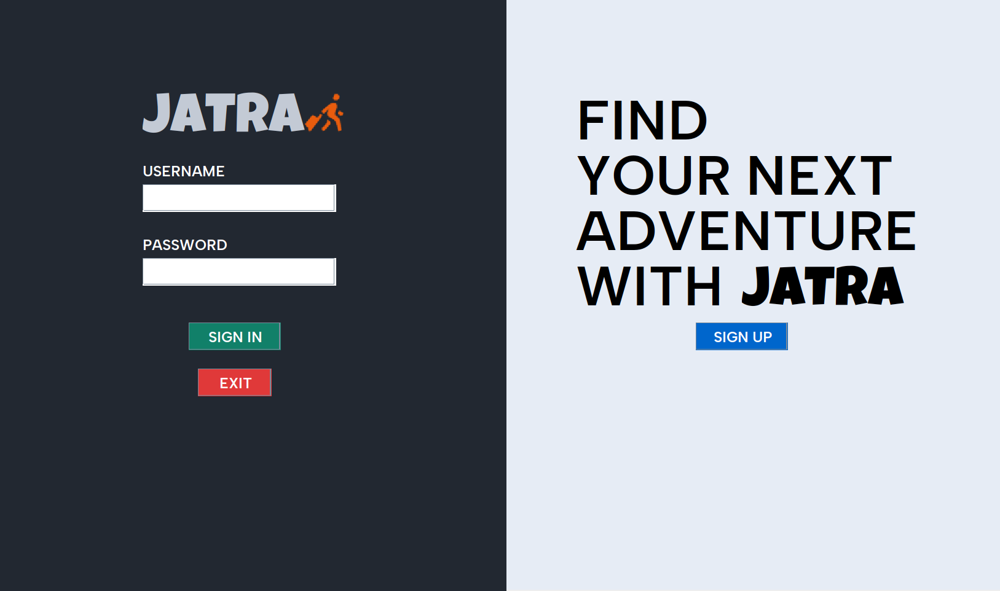
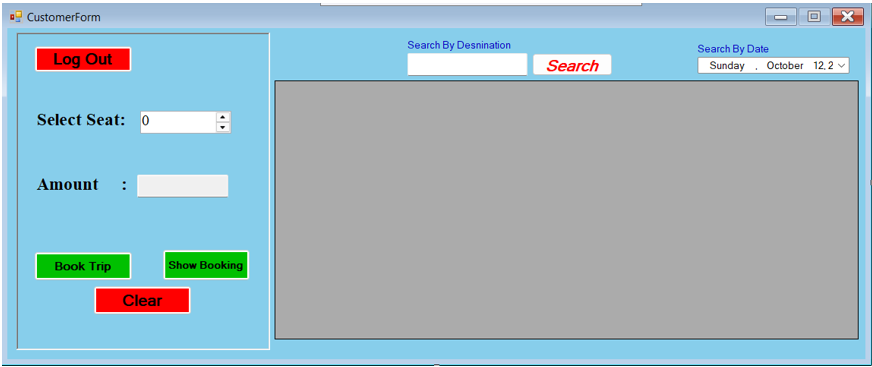
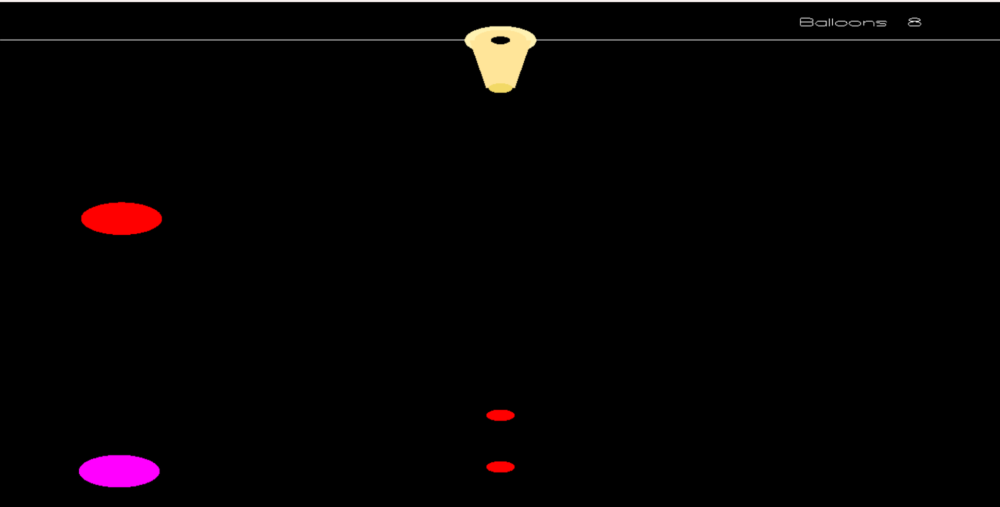

This page shows some of the projects I have worked on and the experience I gained while developing them.

I developed a Ticket Management System using Java. Through this project, I learned how to design a program that allows users to book and cancel tickets while managing customer information. This project helped me improve my understanding of object-oriented programming and system logic.

I worked on a Travel Management System using C# and a database. The system manages travel packages, customer records, and booking information. During this project, I gained experience working with database connections and integrating a backend database with an application.

I also developed a simple game using graphics concepts. This project allowed me to explore basic game development ideas such as object movement, interaction, and visual representation. It helped me gain experience with graphical programming.
I created a Blood Bank database system to store donor information, blood groups, and hospital requests. This project helped me understand database design, table relationships, and how data can be organized to support real-world systems.